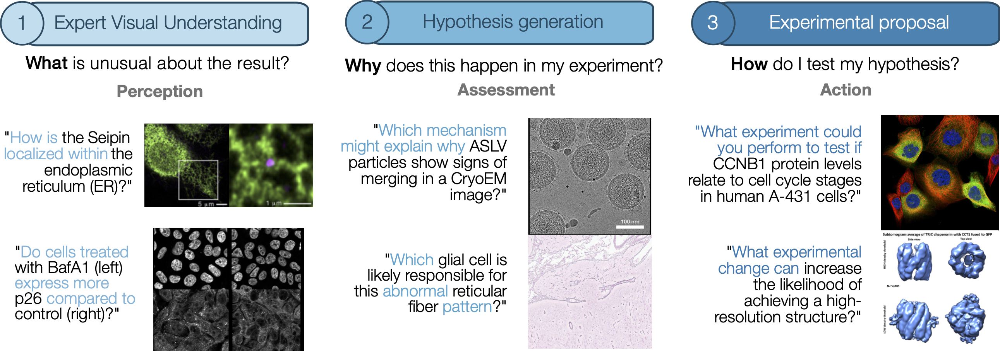
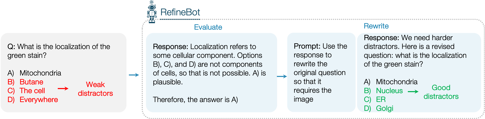

1Stanford University,2Tsinghua University,3University of North Carolina at Chapel Hill,4Princeton University5KTH Royal Institute of Technology6Chan Zuckerberg Biohub Network
Two key themes in AI research are understanding reasoning in large language models (LLMs) and applying LLMs to scientific research. Our work bridges both by introducing MicroVQA, a benchmark that evaluates LLM reasoning on multiple-choice expert-curated questions about microscopy images.

Contributions:
Designed by practicing biologists, these questions reflect tasks where LLMs could meaningfully assist biological research, and each requires multimodal reasoning.
We also advance the practice of AI benchmarking with our RefineBot method, which makes multiple-choice questions more challenging by using LLM feedback to remove language shortcuts.
Key Elements of MicroVQA
Useful for real scientific researchers: MicroVQA is composed of 1061 questions across three tasks designed to be central to scientific research - expert visual understanding, hypothesis generation, and experimental proposal.
Difficult reasoning: The questions require specialized research-level microscopy knowledge and high reasoning level (quantified in the Bloom's scale).
High-quality, human-created questions: The questions were created and verified by 11 experts in diverse biological research disciplines.
Challenging for current LLMs: We tested state-of-the-art models spanning open-source, proprietary, and specialized medical models on MicroVQA, with the highest-scoring model achieving 44.2% accuracy over all tasks.
Multimodal: The multimodality of MicroVQA's questions goes beyond having an image attached to the question; the questions require understanding the image to solve them (e.g., localizing structures, comparing images, identifying anomalies). We introduce RefineBot, a method to reduce MLLM reliance on language.
Building MicroVQA
Why build MicroVQA?
Scientific research involves reasoning about complex data while integrating domain-specific knowledge. A lot of recent excitement around LLMs comes from the hope that they can augment humans, either as chat assistants [1,2,3] or as agents [1,2,3]. There are many compelling visions for how these systems might look [1,2,3], but there's now a big need to define concrete tasks that would be useful for real scientists - we need realistic and challenging benchmarks.
Defining the tasks. Step 1 was to define tasks, or categories of questions to guide benchmark collection. We developed them with 8 collaborators over ~15h of discussions.
Expert visual understanding commonly involves anomaly detection or image comparisons. Analysis must consider the sample preparation context and expert knowledge is needed to evaluate biological features and technical artifacts.
Hypothesis generation considers the experimental context and tries to find an explanation for what we see in the image. It requires abductive reasoning, since you need to select from many possible hypotheses given incomplete information.
Experimental proposal requires forming a hypothesis and deciding on next steps to validate it. It requires knowledge about experimental protocols and reasoning about whether the experiment would prove that hypothesis.
This is the first image
Another caption for image 2
Image 3 has a different caption
RefineBot: Making MCQs That Test Reasoning and Remove Language Shortcuts
For evaluations, it's common to start with a 'question' and 'answer' and to use an LLM to generate a good multiple-choice question, including the wrong answers that are called 'distractors'. Here we'll use a very easy biology question to demonstrate.
We found that this naive approach leads to questions that are very easy for LLMs to solve - GPT-4o could get 90% of questions correct, even without the image. Since the original questions really do need the image, we concluded that the generated questions were introducing language shortcuts, meaning LLMs could cheat and solve them using test-taking strategies. We identified 3 types of shortcuts:
Shortcut 1: The text 'gives away' the image content so it's trivial to answer the question.
Shortcut 2: The LLM generates implausible or weak distractors.
Shortcut 3: 'Language bias', is a known problem in VQA [1, 2].
We created RefineBot to fix this (code here). The key idea is that if you give the question to the LLM without the image (box 1 below), then the LLM's chain-of-thought response will show you what language shortcut it used (box 2). Then you can simply prompt the LLM to rewrite the question in a way that removes the shortcut (boxes 3 and 4).

The final RefineBot system applies this basic idea in a loop, with an extra check that the revised question matches the original question.
While we designed this to deal with language shortcuts in particular, we think that a similar strategy could make any multiple-choice question harder.
Testing MLLMs on MicroVQA
We tested MicroVQA on current frontier models:
MicroVQA is too challenging for all existing multimodal LLMs.
There is little gap between frontier closed- and open-source models.
For a given model family, there is very little difference between the larger model like Qwen2-VL-72B and its smaller counterpart Qwen2-VL-7B - note that the smaller models often have the same vision encoder.
Standard fine-tuning methods for medical fine-tuning (as in Llava-Med) do improve performance a bit.
The human baseline was 51% - this reflects that biology is very specialized, so even expert humans will get many questions wrong.
The models used by the RefineBot MCQ generation - GPT-4o and Claude-3.5-Sonnet - underperform, probably due to a small bias induced by their use in MCQ construction.
What do MLLMs get wrong?
Understanding error modes.
We manually reviewed 30 random samples of errors by Claude-3.5-Sonnet, taking about 45 minutes to carefully understand the failures. Here's one example:
50% were perception errors - failing to interpret the image. Many responses tend to rely on the 'language bias' towards common image content (that we discuss above).
30% were misconception errors (or knowledge errors) about nuanced biomedical knowledge.
13% were over-generalization or over-simplification - the model answers a less-specific and less-nuanced version of the actual question.
7% were hallucinations about the question text added in the chain-of-thought response.
Bloom's Taxonomy to Measure Reasoning Difficulty
Why use Bloom's Taxonomy?
Bloom's Taxonomy classifies cognitive skills into six levels, from basic recall to complex reasoning. While multiple-choice questions (MCQs) cannot assess the highest level—creation—they effectively test comprehension, application, analysis, and evaluation [1][2][3].
MicroVQA applies Bloom's Taxonomy to systematically compare the reasoning demands of multimodal biomedical benchmarks.
MicroVQA's focus on high reasoning levels.
Prior benchmarks, often derived from educational exams and textbooks, emphasize recall and basic comprehension. In contrast, MicroVQA prioritizes higher-order reasoning by testing scientific research tasks such as analyzing microscopy images in novel experimental contexts and evaluating hypotheses.
This structured approach ensures that MicroVQA better reflects the cognitive demands of real scientific reasoning, filling a crucial gap in multimodal AI evaluation.
Composition of scientific MLLM benchmarks regarding estimated Bloom's taxonomy.


{kind=link}